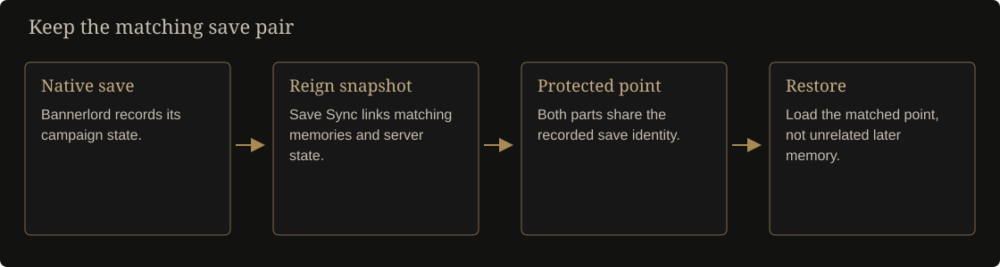

Mount & Blade II: Bannerlord · Reign
Saving, loading, and backups
Keep your Bannerlord save and Reign history together. Back up before major changes.
Development guide · November 24, 2026 · Edition notes
A Bannerlord save and Reign memory belong together
#Your native save holds Bannerlord's campaign. Reign also stores memories, relationships, history, images, and other campaign state in its local server. Save Sync pairs a protected native save with the matching Reign snapshot.
Save with the server running. Reign prepares the matching snapshot and warns if the native save succeeds but server protection fails. An unprotected save is still a native save, but it is not proof that the matching Reign state is safely aligned. Restore service and make a new protected save rather than ignoring the warning.
Copying or renaming a native save does not invent a fresh Save Sync identity. Loading an older protected point restores the associated Reign timeline; later memories should not bleed into an earlier world.
The protected point also restores the campaign's saved calendar reference, which keeps the date and aging aligned. A legacy save that predates a verified calendar reference can show a different preparation status. Inspect Campaign Backups to see whether your save has a registered matching snapshot. Previewing a legacy point leaves the campaign as it was.

Capacity and safe housekeeping
#There is a limited pool of unique protected Save Sync states. Watch the warning and capacity display instead of keeping unlimited one-off saves and assuming every one is protected. Overwriting an ordinary rolling save can retire its older point where safe. Use the native save UI's supported deletion flow when removing a save you no longer need.
Capacity reflects registered protected points. A stale display, an unprotected save, or several copies of one native save can make the numbers look different from your file list. A removed registration and a registered snapshot whose data is missing are different statuses. Check the exact save point before deleting any backups.
Do not manually delete server database folders to make space. A native save can exist without its matching protected Reign point, and a renamed copy can still share the old identity. Keep intentional backups outside routine cleanup.
Close Bannerlord before using the Control Center's Campaign Backups cleanup controls. Choose the individual campaign, campaigns with no matching saves, or the full cleanup option, then answer the Are you sure? prompt. The no-save cleanup preserves campaigns with matching physical saves, imports awaiting their first load, and the shared portrait library. Full cleanup removes Reign histories, backups, campaign portraits, and related queued work. The native save files and installed shared portraits remain. An already scheduled cleanup can finish after the server starts.
Exporting and restoring a campaign
#In Campaign Backups, select the correct campaign and export its archive. Keep the matching native Bannerlord save with it. The Reign archive preserves campaign-side memory and supporting data; it does not contain your global provider API keys.
On restore, select the intended archive and inspect any replace-existing-campaign warning before confirming. Loading a native save from one point with unrelated server data is not a complete restoration. Keep a separate copy of the current pair before replacing anything valuable.
If Campaign Backups reports a failed restore and recovery of the previous state, check the campaign and save identity before retrying. While recovery is pending, keep the original native save, its Reign backup, and the archive you were importing. Reign checks the archive and the restored state before treating the replacement as complete.
Deleting a Reign campaign is destructive even if it leaves the native save file behind. Deleting all campaigns is broader still. A backup, a protected snapshot, an older native save, and a new campaign are four different things.
Updating, moving computers, and removing the mod
#Before a major update or move, export Reign campaign data and retain the matching native save and package/version information. The installation's module, writable cache, selected server environment, and shared portrait library have deliberate locations; copying only a DLL is not a complete installation.
Existing campaigns keep established identities and profiles unless an explicit supported migration changes them. Do not assume a new-campaign feature will be retrofitted. Likewise, do not assume removing a mod with saved campaign behaviors mid-campaign is supported. This guide does not claim a tested universal uninstall or cross-version save-conversion path.